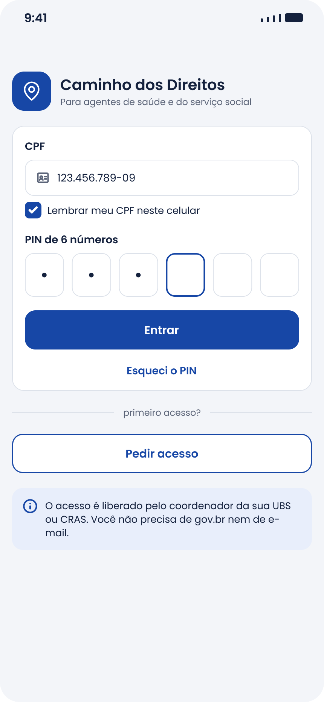
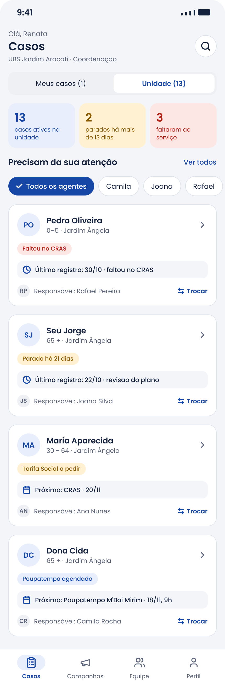
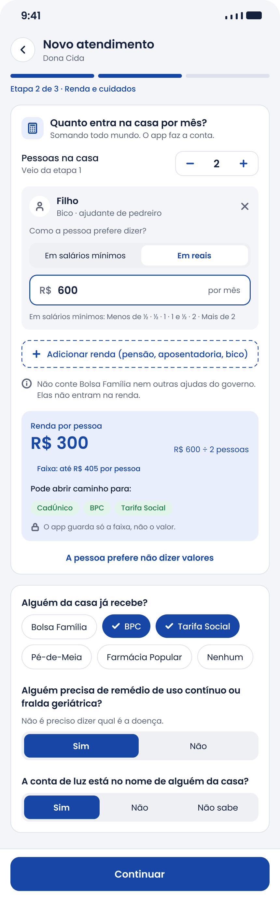
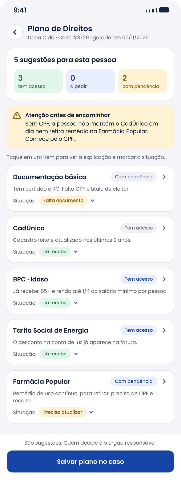
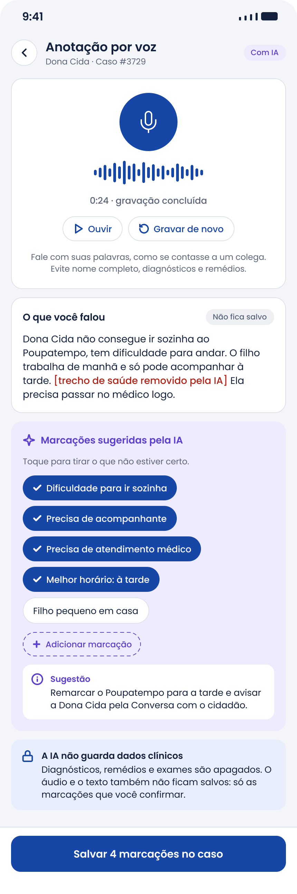

Você leva o direito até a porta.
O Caminho dos Direitos transforma a visita do agente de saúde ou do assistente social em um plano de direitos, encaminha a pessoa com lembrete no WhatsApp e mostra para a gestão onde agir primeiro nos 96 distritos de São Paulo.
Os dados públicos mostram quem está ficando de fora
Cruzamos Censo 2022, CadÚnico, Bolsa Família, BPC, CRAS, UBS e áreas de risco, distrito por distrito.
famílias no CadÚnico em São Paulo
SMADS · jan/2026famílias do CadÚnico para cada CRAS (são só 54 na cidade)
SMADS + Geoportalpessoas com direito provável a BPC idoso ou Bolsa Família que não recebem
Estimativa do modelodelas estão em só 10 distritos, os de prioridade urgente
Cerca de 54.947 pessoasNos distritos com área de risco R3/R4, 2 pontos a menos das famílias do CadÚnico recebem Bolsa Família. Quem já vive em risco também tem menos acesso.
Ver os insightsO direito existe. O que falta, muitas vezes, é o caminho até ele.
Quem mais precisa de um benefício costuma ser quem tem mais dificuldade de chegar até ele.Por que tanta gente fica de fora?
Pessoas em situação de vulnerabilidade têm direito a benefícios, mas travam em barreiras pequenas que se acumulam.
Dados públicos e IA que viram ação na porta da casa
Não criamos um novo cadastro nem um novo benefício. Usamos quem já está em campo e os dados que já existem para fechar o caminho entre o direito e a pessoa.
Plano de Direitos na visita
Um formulário curto vira a lista de benefícios possíveis entre 7 programas, com o que falta para cada um. A IA explica em linguagem simples, citando a fonte.
7 programas · motor de regras + RAGEncaminhamento com lembrete
A pessoa sai com o serviço certo, o dia e os documentos. O lembrete chega no WhatsApp em texto e em áudio, dela ou de um familiar.
WhatsApp Cloud API · texto e vozAnotação por voz com IA
O agente fala, a IA transcreve, remove o dado clínico e sugere marcações. O agente confirma. O áudio é apagado.
faster-whisper local + ClaudeModelo de priorização
Compara cada distrito com os de perfil social parecido, estima quem tem direito e não recebe e gera um índice de 0 a 100 com campanhas recomendadas.
Random Forest · R² 0,81 (BPC)Cada cargo vê o que precisa
Secretaria vê a cidade, subprefeitura vê só o seu território, coordenação vê a sua unidade. Segurança por linha no Power BI.
Entra ID + RLS por subprefeituraFeito para quem está em campo
Entrada com CPF e PIN, sem gov.br, aprovada pelo coordenador. Um diferencial em relação ao e-SUS para o dia a dia do agente.
CPF + unidade + PIN de 6 dígitosDa base pública até a porta da casa, no mesmo fluxo
Ferramentas de monitoramento costumam parar no painel. Apps de campo costumam parar no cadastro. O Caminho dos Direitos liga as duas pontas: o modelo diz onde agir, o agente age, e o que ele registra volta para o painel.
- 14 bases reais (12 públicas e 2 levantamentos do grupo), conferidas distrito a distrito
- Campanhas só onde a prioridade é urgente ou alta
- Alertas cruzados entre território e o que o app registrou
- LGPD desde o desenho: renda só em faixa, sem dado clínico
Hoje × com o Caminho dos Direitos
| Hoje | Com o Caminho | |
|---|---|---|
| Descobrir direitos | Depende do que o agente lembra de cada programa | Plano com 7 programas gerado na visita |
| Documentos | A pessoa descobre no balcão que falta um papel | Lista do que falta e do que levar, antes de sair |
| Encaminhamento | Boca a boca, ninguém sabe se ela foi | Registrado, com resultado: compareceu, concluiu, faltou |
| Lembrete | Nenhum | WhatsApp em texto e áudio, com dia, local e documentos |
| Onde agir | Campanhas sem comparar territórios | Índice de prioridade dos 96 distritos |
Quem já bate na porta leva o direito junto
Agentes de saúde e assistentes sociais já visitam as famílias. O app transforma essa visita em um plano de ação.
Na visita
- O agente preenche um formulário curto com a pessoa.
- A renda é calculada por pessoa da casa, sem constranger.
- Anotações podem ser ditadas e a IA organiza.
Plano e encaminhamento
- O app sugere os benefícios possíveis e as pendências de cada um.
- O agente encaminha a pessoa ao serviço certo.
- Lembrete no WhatsApp com dia, local e documentos.
Monitoramento
- Os dados viram um painel por subprefeitura.
- A gestão vê onde há mais pessoas sem documento ou benefício.
- O modelo indica quais distritos priorizar em campanhas.
Como o Caminho dos Direitos funciona por dentro
Arquitetura híbrida na Microsoft Azure com Databricks e camadas medalhão. O processamento e os modelos são em Python, e a solução usa APIs externas onde elas são a melhor opção.
Bronze
As 14 bases (12 públicas e 2 do grupo) do jeito que chegaram e a cópia diária do banco do app.
Prata
Território tratado e conferido: 96 distritos sem repetição, população somada igual ao Censo. Dado que não passa nas conferências não sobe de camada.
Ouro
Modelo dimensional Snowflake + Galaxy: 8 fatos e 6 dimensões, prontos para o Power BI e para o painel HTML.
Onde agir primeiro, em um só painel
O painel cruza o território real com o que o app registra. Estes são os insights que ele sustenta:
das pessoas com direito provável sem benefício estão nos 10 distritos urgentes. Jardim Ângela, Tremembé e Grajaú lideram.
a menos de cobertura do Bolsa Família nos distritos com área de risco R3/R4 (38,2% contra 40,1%), diferença significativa a 5%.
de correlação entre setores de risco e falta de acesso por habitante: a área de risco agrava o problema. Já a distância ao CRAS não explica (0,06).
Território: dados públicos reais. Uso do app: simulado, calibrado nos dados reais, porque o app ainda é um protótipo. Versão Power BI no arquivo .pbix.
Entre no lugar de quem decide
Escolha um cargo e veja a plataforma como ele veria. Cada perfil enxerga só o que precisa, como na segurança por linha do Power BI.
Visão da cidade
Assistência Social: decide onde investir campanhas e equipes.
- Mapa dos 96 distritos
- Ranking de prioridade
- Aprovar campanhas
M'Boi Mirim
Gestão local: vê só o próprio território, com o distrito mais prioritário da cidade.
- Distritos e unidades
- Alertas cruzados
- Painel com RLS
UBS Jardim Aracati
Coordena a equipe que atende a Dona Cida.
- Aprovar acessos
- Casos da unidade
- Transferir casos
App do agente
Quem bate na porta: visitas do dia, plano e lembretes.
- Agenda de visitas
- Telas do app
- Vídeos das funções de IA
A jornada da Dona Cida
Um caso acompanhado do primeiro contato até o atendimento.
A visita
A agente da UBS preenche o formulário com a Dona Cida, na casa dela.
O plano
O app mostra que, para seguir com os benefícios, ela precisa tirar o CPF.
O encaminhamento
A agente agenda o atendimento no Poupatempo e registra no caso.
O lembrete
Ela recebe no WhatsApp, em texto e áudio, o dia, o local e o que levar.
Anotação por voz com IA
A IA transcreve, remove o trecho de saúde e sugere marcações (dificuldade de locomoção, melhor horário à tarde). Ao salvar, fica só a marcação: o áudio é apagado.
Lembrete por WhatsApp
Enviado pela Cloud API da Meta: Poupatempo M'Boi Mirim, 18/11, 9h, com os documentos. Depois, a mensagem de voz com o mesmo lembrete.
LGPD desde o desenho, não depois
Quem mais precisa do serviço público não pode pagar com a própria privacidade.
A IA remove o trecho de saúde da anotação. O áudio do agente é transcrito no próprio servidor e apagado.
A calculadora chega à renda por pessoa, mas o app guarda só a faixa, nunca o valor.
Opt-in registrado, PARAR e VOLTAR, telefone guardado como hash, conversas apagadas em 30 dias.
Cada gestor vê só a sua subprefeitura. O coordenador aprova cada acesso. O painel não mostra nome nem CPF.
O modelo compara cada distrito com os de perfil parecido, e não com a média da cidade, para não esconder periferias.
Todo dado diz a origem: REAL, ESTIMATIVA DO MODELO ou SIMULADO. A IA sugere, o agente confirma.
Conheça as telas do app
Arraste para o lado para ver as principais telas do app.
← arraste →








Dados e modelo, com código aberto
Todo o tratamento foi feito em Python, nos notebooks deste repositório.
Tratamento dos dados
Padroniza os distritos, faz o join espacial e confere a população somada contra o Censo.
Ver notebookModelo de prioridade
Random Forest, Gradient Boosting e Ridge comparados por validação cruzada. Estima a cobertura esperada e a lacuna.
Ver notebookSnowflake + Galaxy
Modelos conceitual, lógico e dimensional que ligam o app, os dados públicos e o painel.
Ver modelagemPoucos ODS, com relação direta ao problema
A Agenda 2030 da ONU no nível do distrito e da visita.
Erradicação da pobreza
Leva BPC, Bolsa Família e Tarifa Social a quem tem direito e não recebe, começando pelos distritos com maior lacuna.
Redução das desigualdades
Prioriza onde o acesso é menor do que o esperado para o perfil do distrito, como as áreas de risco R3/R4.
Instituições eficazes
Documentação básica (certidão, CPF, RG) é a porta de entrada de todos os outros direitos.
Como vamos medir
Veja o Caminho dos Direitos em 5 minutos
O problema, a solução e o impacto que o projeto pode gerar.
Perguntas frequentes
O app já está funcionando?
O app é um protótipo navegável no Figma. O motor de regras do Plano de Direitos, a anotação por voz com IA e o lembrete por WhatsApp já funcionam em Python (veja os vídeos). O painel e o modelo de prioridade rodam com dados públicos reais.
Os dados do painel são reais?
Os dados de território são públicos e reais (Censo, CadÚnico, BPC, CNES, GeoSampa, entre outros). Os dados de uso do app, como casos e encaminhamentos, são simulados e calibrados nos dados reais, para mostrar como o painel funcionaria com o app em uso. Cada número diz a sua origem.
O login da demonstração é real?
Não. Ele simula o que cada cargo veria. Na operação, os gestores entram pelo Microsoft Entra ID e o Power BI aplica a segurança por linha; os agentes entram com CPF, unidade e PIN, aprovados pelo coordenador.
Por que o app não usa login do gov.br?
Muitos cidadãos têm grande dificuldade para acessar o gov.br. Por isso mantemos um sistema de login interno: o acesso é feito com CPF, unidade de trabalho e um PIN, e o coordenador da UBS ou do CRAS aprova o pedido.
O que o modelo de prioridade faz?
Ele estima, por distrito, quantas pessoas têm direito provável a BPC idoso ou Bolsa Família e não recebem, comparando com distritos de perfil parecido. Daí sai um índice de 0 a 100 e campanhas só para os distritos de prioridade urgente ou alta.
Quem fez
Veja o território pelos olhos de quem decide
Entre como secretaria, subprefeitura, coordenação ou agente e explore a plataforma com os dados reais dos 96 distritos.